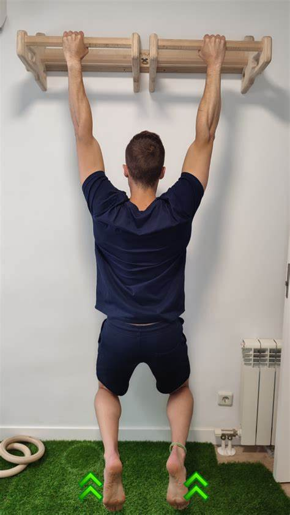
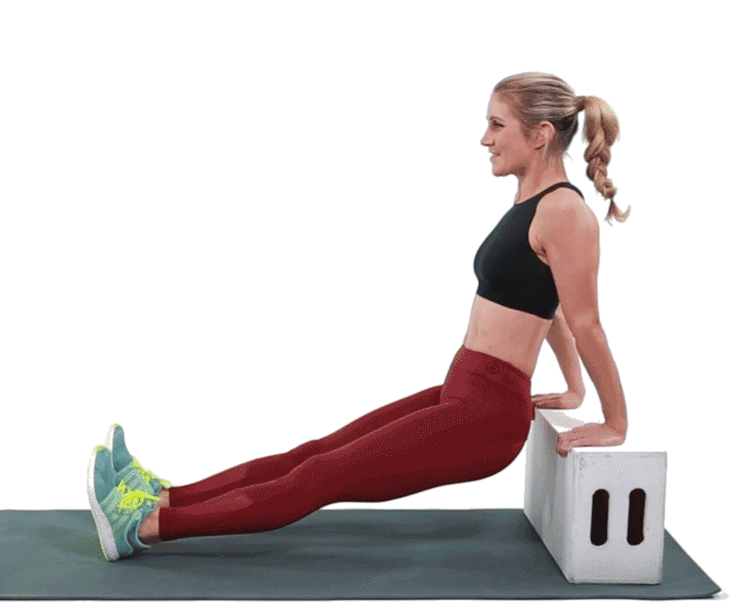

| PECHO | ESPALDA | TRÍCEPS | BÍCEPS | PIERNAS |
Flexiones |
Colgarse en Barra |
Fondo en Paralelas |
Curl de Bíceps |
Sentadillas |
 Haciendo flexiones conseguiras empezar a entrenar tu pecho y prepararlo para otros ejercicios |
 Esto tiene una gran importancia ya que te ayudara a ejercitar la espalda. |
 Con este ejercicio empezaras a ejercitar tus tríceps. |
.gif) Con este ejercicio y poco peso empezaras a ejercitar tus bíceps. |
.gif) Este ejercicio empezara a ejercitar tus piernas de manera completa y podras ponerle peso. |
| PECHO | ESPALDA | TRÍCEPS | BÍCEPS | PIERNAS |
Press Banca |
Dominadas |
Polea de Tríceps |
Martillo de Bíceps |
Prensa |
.gif) Con el Press de Banca conseguiras aumentar tu masa muscular en el pecho. |
.gif) Con las dominadas haras uso de muchas partes de tu espalda y tambien usaras parte de tus bíceps. |
.gif) Haciendo polea de Tríceps enfocaras el ejercicio al máximo en tus tríceps |
.gif) Con el Martillo de Bíceps conseguiras una mejor forma en el brazo. |
.gif) Con prensa ejercitaras la mayoría de los músculos de la pierna y a medida que subas el peso tu masa muscular aumentará |